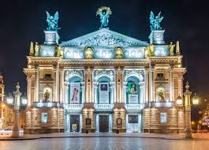
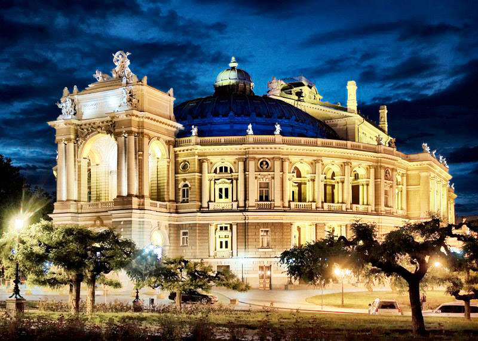
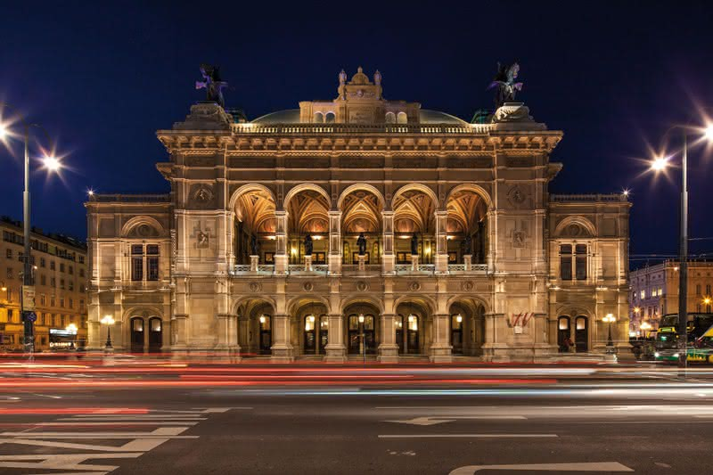

Львів
Львівський національний академічний театр опери та балету імені Соломії Крушельницької — театр опери і балету у Львові, розташований в історичному центрі міста на проспекті Свободи, 28 та названий на честь відомої української оперної співачки Соломії Крушельницької.
Одеса
Оде́ський націона́льний академі́чний теа́тр опери та балету — найстаріший оперний театр України. Найкращий театр Одеси та України на момент побудови. Будинок зведено 1887 року під керівництвом архітекторів Фердинанда Фельнера і Германа Гельмера («Бюро Фельнер & Гельмер») у стилі віденського бароко. Архітектура глядацького залу витримана в стилі пізнього французького рококо.
Відень
Ві́денська держа́вна о́пера (нім. Wiener Staatsoper, до 1918 року — Віденьска придворна опера) — найбільший оперний театр в Австрії, центр музичної культури. Театр був заснований у середині XVII століття, проте спектаклі ставилися в різних приміщеннях.